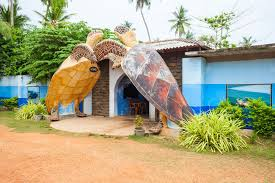

The Sri Lankans established the Turtle Hatchery in an effort to save the turtles from extinction. Previously,
individuals—typically fishermen—would gather turtle eggs and sell them to the highest bidder. Theseeggs were
fed and cared for beginning with the turtle hatchery until they were 2 to 4 years old. Turtles of several species,
including the Green Turtle, Leatherback, and Olive Ridley, can be found. Despite becoming extinct, turtles are
still being caught by fisherman for the fish and shells they provide, which is a very lucrative market.
Location : A 10- to 15-minute tuk tuk journey from Bentota will take you there.
Keep in mind: Don't shine any light on the turtles that are nesting.
Price: The approximate starting price is 500 LKR.
Turtle eggs that have been left on their own are vulnerable to predators and helpless against them. Additionally, there is a chance that local fishermen will find the eggs and sell them to poachers, who would then sell them on the black market. The hatcheries address this by paying the fisherman more for their eggs, which incentivizes them to keep bringing in the imperiled eggs to a safer area.
The newborn turtles are released on the beach at dusk, and you can watch them make their way back to the ocean. Visitors are urged to use caution while young turtles are released back into the water. Loud sounds, bright lights, and flash photography are prohibited because they could cause newborn turtles to mistake them for the moon over the water, which would prevent them from finding their way back home.
